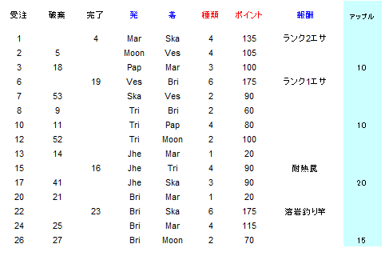

fish mongerのクエスト資料
配送する魚介類の数量
以前、メールで寄せられた情報をもとに確認を行いました。
配送する魚介類の数量は種類ごとに設定されており、次のように変化していきます。
どの依頼も、同じ魚を配送するものとします。
基本
- 配送数量の初期値は10匹。最小値は5匹、最大値は20匹
- 配送を完了したとき、次回の配送数量は5匹増となる
- 配送を破棄したとき、次回の配送数量は5匹減となる
- 完了し続けた場合の配送数量は、10→15→20→10→・・・・となる
- 破棄し続けた場合の配送数量は、20↓15↓10↓5↓5・・・・となる
Publish72より、完了し続けた場合の配送数量が20→10に戻ることはなくなりました。
依頼を受けてからのキャンセルをしなければ、最終的に、全ての魚の配送数量が20匹となります
特殊
- 20匹の配送を完了した後に受けた10匹の配送を破棄すると、次の配送数量は20匹となる
20→10↓20
- 配送Aを保持してた状態で配送Bを受けたとき、配送Bの数量は配送Aの数量と同じとなる
- 上記の配送Aと配送Bを完了してから配送Cを受けたとき、配送Cの数量は配送AまたはBから1段階（5匹）進んだ数量となる
- 配送Aと配送Bを破棄してから配送Cを受けたとき、配送Cの数量は配送AまたはBから2段階（10匹）減った数量となる
- 配送Aを完了してから配送Bを破棄し、その後配送Cを受けたとき、配送Cの数量は配送AまたはBと同じになる
- 配送Aを破棄してから配送Bを完了し、その後配送Cを受けたとき、配送Cの数量は配送AまたはBから1段階（5匹）進んだ数量となる
実例1
配送依頼を受ける、依頼を破棄するまたは完了するのを1行動とし、クエスト数量に関わることを抜き出しました。
- 行動3 ： アップルクラブ10を含む配送依頼Aを受ける
- 行動10 ： 配送依頼Bを受ける。行動3での依頼を保持しているため、アップルクラブの数量は10
- 行動11 ： 配送依頼Bを破棄
- 行動17 ： 配送依頼Cを受ける。アップルクラブの数量は20。
行動3以前にアップルクラブ20を含む配送を完了していたため、10から20となった。
- 行動18 ： 配送依頼Aを破棄。
- 行動26 ： 配送依頼Dを受ける。アップルクラブの数量は15
- 行動27 ： 配送依頼Dを破棄。
- 行動41 ： 配送依頼Cを破棄。
- 行動61 ： 配送依頼Eを受ける。行動26以降2回破棄していたため、アップルクラブの数量は5
実例2
- 行動153 ： ハンマーロブスター15を含む配送依頼Aを受ける
- 行動157 ： 配送依頼Bを受ける。行動153での依頼を保持しているため、ハンマーロブスターの数量は15
- 行動159 ： 配送依頼Bを破棄
- 行動160 ： 配送依頼Aを完了
- 行動169 ： 配送依頼Cを受ける。ハンマーロブスターの数量は20
実例3
- 行動158 ： ロックロブスター20を含む配送依頼Aを受ける
- 行動161 ： 配送依頼Bを受ける。行動158での依頼を保持しているため、ロックロブスターの数量は20
- 行動162 ： 配送依頼Bを完了
- 行動166 ： 配送依頼Aを破棄
- 行動184 ： 配送依頼Cを受ける。ロックロブスターの数量は20
実例4
- 行動137 ： アワレナパイク10を含む配送依頼Aを受ける
- 行動140 ： 配送依頼Bを受ける。行動137での依頼を保持しているため、アワレナパイクの数量は10
- 行動142 ： 配送依頼Aを完了
- 行動148 ： 配送依頼Bを完了
- 行動155 ： 配送依頼Cを受ける。アワレナパイクの数量は15
